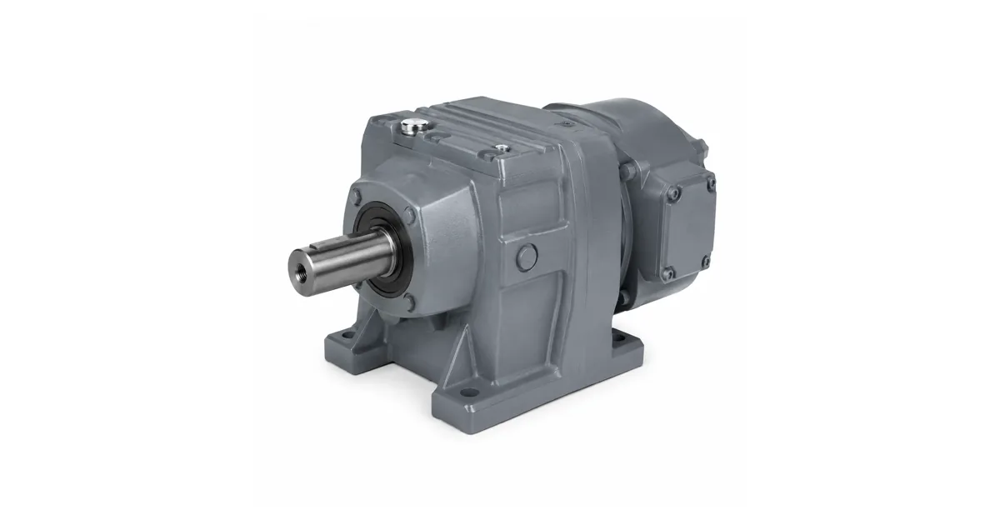
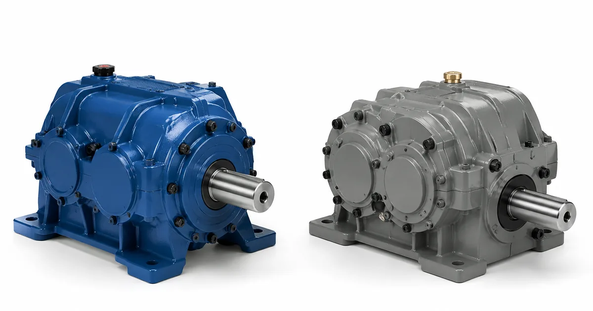

Собственное производствоПромышленные редукторы для производителей оборудования•Отгрузка по всей России•Аналоги SEW, NORD, Bonfiglioli без переделки рамы•Расчёт и КП за 15 минут•Гарантия 36 месяцевПромышленные редукторы для производителей оборудования•Отгрузка по всей России•Аналоги SEW, NORD, Bonfiglioli без переделки рамы•Расчёт и КП за 15 минут•Гарантия 36 месяцев
ТехноРедуктор Урал: что это за компания и чем мы отличаемся
Факты о компании и честное сравнение · обновлено 09.08.2026
Это страница сравнения, а не сайт компании ТехноРедуктор Урал. Мы — «Завод Редукторов» (ООО «НИИ АТТ», Челябинск), собственное производство редукторов и мотор-редукторов ZR. К компании ТехноРедуктор Урал мы отношения не имеем, её товарные знаки принадлежат ей, официальный сайт ищите у неё самой. Здесь мы честно рассказываем, что это за предприятие и в чём наши линейки пересекаются, — чтобы вы могли выбрать осознанно.
Кто это
«ТехноРедуктор Урал» — уральская компания, которая проектирует, изготавливает и поставляет промышленные редукторы. Присутствие заявлено по Свердловской, Тюменской и Челябинской областям.
Обратите внимание: «ТехноРедуктор Урал» и «Техноредуктор» (марка VTR) — разные организации со схожими названиями. Их часто путают в запросах.
Встречающиеся написания названия: Техноредуктор Урал, ООО Техноредуктор Урал, техноредуктор урал официальный сайт.
Что выпускает
Цилиндрические редукторы
Конические и коническо-цилиндрические редукторы
Червячные редукторы
Инженерное сопровождение и сервис — от подбора до запуска на объекте
Где мы пересекаемся
Обе компании работают на Урале и закрывают промышленные приводы. Отраслевой акцент у коллег — металлургия, нефтегаз, горнодобыча; наша основная номенклатура — общепромышленные редукторы и мотор-редукторы, включая массовые ГОСТ-серии и замену импорта.
Для тяжёлых металлургических приводов имеет смысл запрашивать КП у нескольких производителей. Мы честно скажем, если задача выходит за нашу номенклатуру.
Что делаем мы
«Завод Редукторов» — собственное производство в Челябинске. Выпускаем цилиндрические, коническо-цилиндрические, червячные и планетарные редукторы и мотор-редукторы серии ZR, а также классические ГОСТ-серии Ц2У, РМ, РЦД, Ч, МЧ, 1Ц3У. Отдельное направление — замена импортных приводов по присоединительным размерам.
Как сравнивать поставщиков привода — вопросы, которые стоит задать каждому
Вопрос
Почему важен
Наш ответ
Кто изготовитель?
от этого зависит гарантия и повторяемость
производим сами, Челябинск
Есть ли паспорт на изделие?
фиксирует фактические параметры
передаём с каждым редуктором
Какая гарантия?
сравнимый показатель у всех
36 месяцев
Срок изготовления?
решает при аварийной замене
называем вместе с ценой
Подбор по шильду?
без него замена импорта — лотерея
делает инженер по обозначению и размерам
Что с присоединительными размерами?
именно они определяют, встанет ли редуктор
проверяем до счёта, при необходимости делаем переходную плиту

Редукторы и мотор-редукторы ZR собственного производства

Сравнение приводов: смотрим на геометрию, а не только на момент
Как подобрать замену
Порядок простой. Пришлите фото шильда на zr@zavod-red.ru либо снимите присоединительные размеры — диаметр и длину выходного вала, шпоночный паз, фланец или межосевые расстояния лап, высоту оси. Инженер сверит их с нашей номенклатурой и даст один из трёх честных ответов: встаёт без переделок, встаёт с переходной плитой, не встаёт.
Отгружаем по всей России транспортными компаниями, самовывоз — со склада в Челябинске. Оплата по счёту для юридических лиц, для новых клиентов возможна частичная предоплата. На изделия собственного производства ZR даём гарантию 36 месяцев и передаём паспорт с фактическими параметрами. Условия и сроки — на страницах доставки и цен: конкретную стоимость называем после подбора, потому что она зависит от исполнения, передаточного числа и комплектации двигателем.
Не уверены в подборе? Пришлите фото шильдика на zr@zavod-red.ru — инженер прочитает обозначение, сверит присоединительные размеры и пришлёт расчёт. Или соберите вариант сами в калькуляторе подбора: там задаются диапазоны по мощности, оборотам, моменту и передаточному числу.
Частые вопросы
Это официальный сайт ТехноРедуктор Урал?
Нет. Это страница сравнения на сайте Завода Редукторов (ООО «НИИ АТТ», Челябинск). К компании ТехноРедуктор Урал мы отношения не имеем, её официальный сайт ищите у неё самой.
Зачем вы пишете о конкуренте?
Потому что покупателю нужно сравнивать. Мы приводим проверяемые факты о профиле компании и честно говорим, где наши линейки пересекаются, а где задача не наша.
Чем вы отличаетесь?
Мы производим редукторы сами в Челябинске, передаём паспорт с фактическими параметрами и даём гарантию 36 месяцев. Подбор аналога делаем по шильду и присоединительным размерам, а не по совпадению момента.
Можете подобрать замену тому, что у меня стоит?
Да. Пришлите фото шильда и присоединительные размеры — инженер посчитает типоразмер ZR и скажет, встаёт ли он без переделок.
Сколько стоит?
Цена по запросу: она зависит от исполнения, передаточного числа и комплектации двигателем. Расчёт готовим после подбора.
Какие сроки?
Складские позиции отгружаем сразу, изготовление под заказ считаем по конкретному типоразмеру. Срок называем вместе с ценой, а не «ориентировочно».